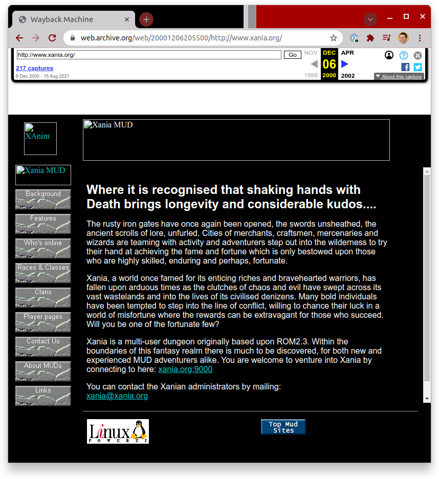
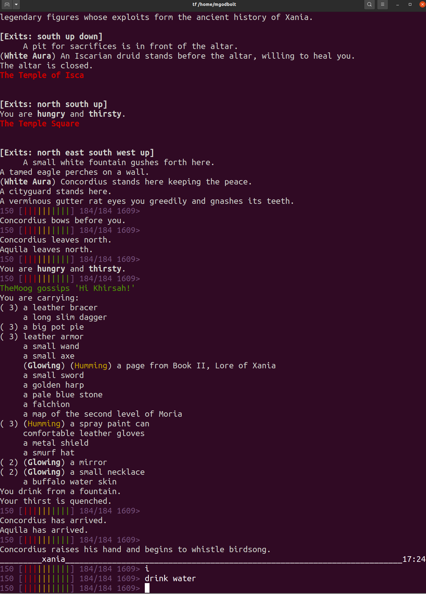

C++'s Superpower
Matt Godbolt — @mattgodbolt
cppp.fr December 2021
C++'s Superpower
TODO: IMAGE OF SUPERMAN LOGO WITH C++ INSTEAD
What could it be?
- Ubiquity
- Performance
- Multi-paradigm
What could it be?
- Wrong defaults
- Legacy support
- Undefined behaviour
Backwards compatibility!
The goal
- Take 90s-era C
- Port to modern C++17
- ...Incrementally!
Backstory
History
- 80s to early 90s - 6502 and ARM assembly
- 1994 discovered C
- 1997 started writing C++
- 2020 rediscovered 1995-era code...
Xania


What is a MUD?
- Dungeons & Dragons
- Multiplayer
- Raw TCP clients
What is a MUD?
A giant text processor!
Groundwork

Groundwork
| Language | Files | Comments | Lines of Code |
|---|---|---|---|
| C | 67 | 4524 | 50977 |
| C++ | 6 | 54 | 699 |
| Perl/make | 8 | 180 | 717 |
Groundwork
gitCMake-Wall -Wextraclang-format-fsanitize=...- conan
The most important thing
Do no harm!
The C++-i-fication
$ rename .c .cpp *.c
$ rename .h .hpp *.h
$ ninja
...
Pop quiz!
Pop quiz!
#define CLASS_MAGE 0
#define CLASS_CLERIC 1
// etc...
struct char_data {
// ...
int class; /* what class this character is */
// ...
};
// ...
/* Display the current flags */
void display_flags (char *template, CHAR_DATA *ch, int current_val);
overlap
TODO venn diagram of D&D vs C++, and string formatting showing class and template
Process
- Small change
- Test
- Leave TODOs
How to improve?
struct area_data {
struct area_data *next;
char *name;
sh_int age;
sh_int nplayer;
bool empty;
char *areaname;
char *filename;
int lvnum;
int uvnum;
int vnum;
};
typedef struct area_data AREA_DATA;
AREA_DATA *areas;How to improve?
struct area_data {
struct area_data *next;// hand-rolled
char *name; // const, c-style
sh_int age;
sh_int nplayer;
bool empty;
char *areaname; // const, c-style
char *filename; // const, c-style
int lvnum;
int uvnum;
int vnum;
};
// Unnecessary!
typedef struct area_data AREA_DATA;
AREA_DATA *areas; // Global!
- Hand-rolled linked list
- Not
constcorrect - C-style strings!
- Unnecessary
typedef - Global!
- Encapsulation,
class
Simple fix
struct area_data {
struct area_data *next;
// ...
};
typedef struct area_data AREA_DATA;
struct AREA_DATA {
AREA_DATA *next;
// ...
};
Changing an element
struct AREA_DATA {
AREA_DATA *next;
char *name; // <---
char *areaname;
char *filename;
// ...
};
struct AREA_DATA {
AREA_DATA *next;
std::string name; // <---
char *areaname;
char *filename;
// ...
};
Changing an element
Compile errors...
- Assignment
.c_str()snprintfwarnings...__attribute__((format(printf, 2, 3)- Sanitizer!
- Testing is just run the app
So now...
struct AREA_DATA {
AREA_DATA *next;
std::string name;
std::string areaname;
std::string filename;
// ...
};
Replace linked-list with STL
pointer stability, vector of unique ptrSo now...
struct AREA_DATA {
std::string name;
std::string areaname;
std::string filename;
// ...
};
std::vector<std::unique_ptr<AREA_DATA>> areas; // still global
Class-i-fy
- struct->class but public:
- move each inside, build test
- accessor functions
Class-i-fy
- Start moving functionality
- AREA *load_area -> Area::parse
- Start writing tests!
Class-i-fied
class Area {
std::string description_;
ush_int num_players_{};
bool empty_since_last_reset_{};
int min_level_{0};
int max_level_{MAX_LEVEL};
std::string short_name_;
Area() = default;
void reset();
public:
static Area parse(
FILE *fp,
std::string filename);
void player_entered();
void player_left();
void update();
[[nodiscard]]
const auto &short_name() const {
return short_name_;
}
// etc...
};
Test
TEST_CASE("area loading") {
test::MemFile fp(R"(ignored~
Short name~
{ 1 50} TheMoog Some kind of area~
6200 6399
)");
auto area = Area::parse(fp.file(), "bob");
CHECK(area.filename() == "bob");
CHECK(area.short_name() == "Short name");
CHECK(area.description() == "{ 1 50} TheMoog Some kind of area");
CHECK(area.min_level() == 1);
CHECK(area.max_level() == 50);
}
Ranges
void Char::yell(std::string_view exclamation) const {
act("|WYou yell '$t|W'|w", this, exclamation, nullptr, To::Char);
for (auto &victim : descriptors().all_but(*this)
| DescriptorFilter::same_area(*this)
| DescriptorFilter::to_character()
) {
act("|W$n yells '$t|W'|w", this, exclamation, &victim, To::Vict);
}
}
String manipulation
char *capitalize(const char *str) {
static char strcap[MAX_STRING_LENGTH];
int i;
for (i = 0; str[i] != '\0'; i++)
strcap[i] = LOWER(str[i]);
strcap[i] = '\0';
strcap[0] = UPPER(strcap[0]);
return strcap;
}
String manipulation
SECTION("capitalize") {
CHECK(capitalize("a monkey") == "A monkey"s);
CHECK(capitalize("A MONKEY") == "A monkey"s);
CHECK(capitalize("a MonkeY") == "A monkey"s);
CHECK(capitalize("") == ""s);
CHECK(capitalize("a") == "A"s);
CHECK(capitalize("A") == "A"s);
}
String manipulation
std::string capitalize(const char *str) {
std::string result;
result.resize(strlen(str));
for (int i = 0; i < strlen(str); i++)
result[i] = std::tolower(str[i]);
result[0] = std::toupper(result[0]); /// BUG!
return result;
}
String manipulation
std::string capitalize(const char *str) {
std::string result;
std::transform(
str, str + strlen(str), std::back_inserter(result),
[](char c) -> char { return std::tolower(c); } );
if (!result.empty())
result[0] = std::toupper(result[0]);
return result;
}
String manipulation
auto capitalize(std::string_view text) {
return text
| ranges::view::enumerate
| ranges::view::transform([](const auto &pair) -> char {
return pair.first == 0 ? std::toupper(pair.second) : std::tolower(pair.second);
})| ranges::to<std::string>;
}
String manipulation
auto capitalize(std::string_view text) {
return ranges::view::concat(
// NB not std::toupper
text | ranges::view::take(1) | ranges::view::transform(toupper),
text | ranges::view::drop(1) | ranges::view::transform(tolower)
) | ranges::to<std::string>
}
String manipulation
- to uppercase/lowercase
- whitespace trimming
- case insensitive matches
- prefixes/suffixes
- parsing
String manipulation
bool matches_inside(const char *astr, const char *bstr) {
char c0;
if ((c0 = LOWER(astr[0])) == '\0')
return true;
int sstr1 = strlen(astr);
int sstr2 = strlen(bstr);
for (int ichar = 0; ichar <= sstr2 - sstr1; ichar++) {
if (c0 == LOWER(bstr[ichar]) && has_prefix(astr, bstr + ichar))
return true;
}
return false;
}
String manipulation
bool matches_inside(std::string_view needle, std::string_view haystack) {
auto needle_low = needle | ranges::views::transform(tolower);
auto haystack_low = haystack | ranges::views::transform(tolower);
return !ranges::search(haystack_low, needle_low).empty();
}
- string manipulation functions
- show evolution of initial_caps_only (also code gen!)
- original
- mutable range
- (not checked in)
- finalstd::string initial_caps_only(std::string_view text) { return text | ranges::view::enumerate | ranges::view::transform([](const auto &pair) { return pair.first == 0 ? toupper(pair.second) : tolower(pair.second); }) | ranges::to<std::string>; }std::string initial_caps_only(std::string_view text) { return ranges::view::concat(text | ranges::view::take(1) | ranges::view::transform(toupper), text | ranges::view::drop(1) | ranges::view::transform(tolower)) | ranges::to<std::string>; } - Show joyous matches_inside implementation
String formatting
char buf[MAX_STRING_LENGTH];
sprintf(buf, "Your gain is: %d/%d hp, %d/%d m, %d/%d mv %d/%d prac.\n",
add_hp, ch->max_hit, add_mana, ch->max_mana,
add_move, ch->max_move, add_prac, ch->practice);
send_to_player(ch, buf);
String formatting
char buf[MAX_STRING_LENGTH];
snprintf(buf, sizeof(buf),
"Your gain is: %d/%d hp, %d/%d m, %d/%d mv %d/%d prac.\n",
add_hp, ch->max_hit, add_mana, ch->max_mana,
add_move, ch->max_move, add_prac, ch->practice);
send_to_player(ch, buf);
String formatting
extern void send_to_player(CHAR *ch, const char *fmt, ...);
send_to_player(ch,
"Your gain is: %d/%d hp, %d/%d m, %d/%d mv %d/%d prac.\n",
add_hp, ch->max_hit, add_mana, ch->max_mana,
add_move, ch->max_move, add_prac, ch->practice);
String formatting
extern void send_to_player(CHAR *ch, const char *fmt, ...)
__attribute__((format(printf, 2, 3)));
send_to_player(ch,
"Your gain is: %d/%d hp, %d/%d m, %d/%d mv %d/%d prac.\n",
add_hp, ch->max_hit, add_mana, ch->max_mana,
add_move, ch->max_move, add_prac, ch->practice);
String formatting
send_to_player(ch,
"Your gain is: {}/{} hp, {}/{} m, {}/{} mv {}/{} prac.",
add_hp, ch->max_hit, add_mana, ch->max_mana,
add_move, ch->max_move, add_prac, ch->practice);
String formatting
ch->send_line(
"You can train: {}.",
fmt::join(
ranges::views::concat(
all_stats | ranges::views::filter([&](auto stat) {
return ch->perm_stat[stat] < get_max_train(ch, stat);
}) | ranges::views::transform(to_short_string),
always_trainable
),
" "sv
)
);
String formatting
sprintf() |
|
snprintf() |
|
__attribute__((format(printf,2,3))) |
 |
fmt::format() |
Conclusion
- Epochs?
- "Privilege"